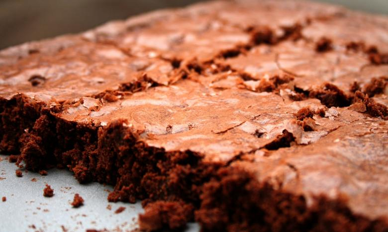

Home
Gluten-Free Brownies

Description
If you or a friend loves chocolatey goodness, you've come to the right place!
Gluten-Free? No problem: This recipe is 100% free of it and super easy to make!
Ingredients
- 1/2 Cup Unsalted Butter
- 3/4 Cup Granulated Sugar
- 1/2 Cup Brown Sugar Packed
- 2 Eggs
- 1 Tbsp.Pure Vanilla Extract
- 3/4 Cup Gluten-Free All-Purpose Flower with Xantham Gum
- 1/2 Cup Cocoa Powder
- 1/2 Tsp. Baking Soda
- 1/2 Tsp. Salt
- Glass or metal pan
Steps
- Preheat Oven to 350 F
- Spray the 8x8 square with GF non-stick cooking spray or line with parchment paper & coat bottom+sides with gluten-free nonstick cooking spray or butter.
- In a large bowl, add melted butter, pure vanilla extract granulated sugar and brown sugar. Mix until combined.
- In a medium sized bowl, combine GF flour, cocoa powder, baking soda and salt and whisk togethe.r
- Slowly add the gluten-free flour mixture to the wet ingradients and mix until fully combined and smooth.
- Pour the brownie batter to 8x8 cooking pan.
- Bake for 30-35 minutes, or until a toothpick inserted into the center comes out clean. Watch brownies as all ovens are different.
- Remove brownies and allow to cool completely.
- Store leftovers in an air-tight container